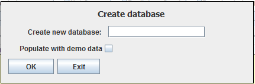

| Create Database |
|---|
|
 |
|
You can bring up the create database dialog by clicking on MySerieS-Create Database menu item. You type the new database name and press the create button. Note that you cannot create a database with the name of a database that already exists. |